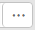

機能説明
HTML5統合リモートバーチャルコンソールにより、リモートからサーバーへのアクセスと管理、OSのインストールまたは修復、およびサーバーへのドライバのインストールが可能になります。
統合リモートコンソールは以下の機能を提供します。
- ローカルPCのキーボードとマウスを使用して、サーバーをリモートで管理できます。
- 仮想フロッピーディスクドライブ（FDD）またはDVD-ROMドライブを使用して、サーバーがネットワーク経由でローカルPCにリモートアクセスすることができます。サーバーには、仮想フロッピードライブまたは仮想DVD-ROMドライブの使用方法は物理的なUSBデバイスのユーザーと同じです。
表 1 KVM画面でのボタンについて説明します。
ボタン |
説明 |
|---|---|
|
ツールバーをロックします。 |
|
ツールバーを非表示にします。 |
|
サーバーデスクトップを全画面モードで表示します。 NOTE:
タイル型表示には対応していません。 |
|
サーバーデスクトップの全画面表示をキャンセルします。 |
|
電源制御メニューが表示されます。このメニューには、次のものが含まれます。
|
|
OSの最初のブートデバイスを設定します。以下の操作が含まれています。
|
|
組み合わせキーを送信またはカスタマイズします。組み合せキーとその意味は以下のとおりです。
NOTE:
組み合わせキーとその機能は、オペレーティングシステムによって異なります。ここで説明する組み合わせキーとその機能はWindows専用です。 |
|
サーバーマウスを制御します。制御操作には、次のものが含まれます。
NOTE:
|
|
仮想DVDドライブを選択して使用します。 NOTE:
仮想DVD-ROMドライブと仮想FDDは複合デバイスです。仮想DVD-ROMドライブがサーバーに接続されている場合、サーバーはメディアのない仮想FDDも認識します。通常の操作方法に従って、仮想FDDが使用できます。 |
|
仮想FDDを選択して使用します。 NOTE:
仮想DVD-ROMドライブと仮想FDDは複合デバイスです。仮想FDDがサーバーに接続されている場合、サーバーはメディアのない仮想DVD-ROMドライブも認識します。通常の操作方法に従って、仮想DVD-ROMドライブが使用できます。 |
|
リモート操作をリアルタイムに録画します。 NOTE:
録画機能を有効にすると、録画中にセンシティブなサービス情報がキャプチャされる可能性があるため注意してください。 |
|
クライアントキーボードをカスタマイズします。デフォルトでは、BMCはクライアントのキーボードレイアウトに自動的に適用します。キーボードの自動適用モードが理想的でない場合は、ターゲットのキーボードレイアウトを強制的に指定してください。
|
|
オンラインヘルプ情報を表示します。 |
|
サーバーデスクトップの画像の明瞭度を調節します。 |


画面の説明
メインメニューからリモートコンソールを選択し、HTML5統合リモートバーチャルコンソール(共有モード)またはHTML5統合リモートバーチャルコンソール(専用モード)をクリックします。
KVM画面が表示されます。

HTML5統合リモートバーチャルコンソール(共有モード)をクリックすると、2人のユーザーがサーバーに同時にアクセスして操作を実行できます。各ユーザーが他のユーザーが実行した操作を表示することができるため、セキュリティリスクが発生する可能性があります。
表 2エリアを説明します。
手順
サーバーの電源投入
- KVM画面で、ツールバーにある
 をクリックしてメニューから電源ONを選択します。
をクリックしてメニューから電源ONを選択します。 - OKをクリックします。
サーバーノードの電源がオンになっています。
電源投入時間がサーバー構成によって異なります。
サーバーの電源切断

- サーバーの電源を切断する前に、すべてのサービスが停止していることを確認してください。
- 必要に応じて電源OFFモードを選択してください。電源OFFモードの違いについては、BMCユーザーガイドのを参照してください。
- KVM画面で、ツールバーにあるをクリックして強制電源停止または電源OFFを選択します。
- OKをクリックします。
デバイスの電源がオフになっています。
サーバーの強制的なリセットまたは電源の再投入
- 強制的なリセットまたは電源サイクルにより、ユーザープログラムまたは未保存のデータが破損する可能性があります。
- システムを強制的にリセットするか、サーバーの電源を強制的に最投入する前に、サービスリスクが存在しないことを確認してください。
- サービス要件に基づいて、リセットモード（システム強制リセットまたは強制電源サイクル）を選択します。2つのモードの違いについては、BMCユーザーガイドのを参照してください。
- KVM画面で、ツールバーにあるをクリックしてシステム強制リセットまたは強制電源サイクルを選択します。
- OKをクリックします。
サーバーは[システム強制リセットまたは強制電源サイクル]を開始します。
システム強制リセットまたは強制電源サイクルが必要な時間は、サーバーの設定によって異なります。
OSの最初のブートデバイスの設定
- KVM画面で、ツールバーにある
 をクリックします。
をクリックします。ブートデバイスのオプションが表示されます。
- 必要に応じて、最初のブートデバイスを選択します。
オプションの詳細については、表 1を参照してください。
組み合わせキーの送信
- KVM画面で、ツールバーにある
 をクリックします。
をクリックします。組み合せキーのダイアログボックスが表示されます。
- 組み合わせキーをクリックします。
サーバーは組み合せキーに対応する操作を実行します。
組み合わせキーをカスタマイズする場合は、カスタムキーの横にあるテキストボックスにキーを順次入力してからOKをクリックします。
リモートマウスの高速化
サーバーデスクトップ上のマウスを高速化し、ローカルPCのマウスと同期させます。
KVM画面で、ツールバーにあるをクリックしてマウス高速化を選択します。
サーバーマウスはローカルPC上のマウスと同期しています。
シングルマウスの使用
ローカルPCのマウスがサーバーデスクトップと同期していない場合は、シングルマウス機能を使用してローカルPC上のマウスを非表示にし、サーバーデスクトップのマウスのみを表示します。
KVM画面で、ツールバーにあるをクリックしてシングルマウスを選択します。
マウスとキーのリセット
サーバーデスクトップ上のキーボードとマウスが応答しないときに、USBキーボードとマウスの取り外しと取り付けをシミュレートします。
KVM画面で、ツールバーにあるをクリックしてマウスとキーのリセットを選択します。
USBキーボードとマウスがリセットされます。
クライアントキーボードレイアウトの指定
KVM画面で、ツールバーにある をクリックして使用するキーボードを選択します。
をクリックして使用するキーボードを選択します。
DVD-ROMドライブのマウント
ローカルPCのDVD-ROMドライブをサーバーにマウントします。
- KVM画面で、ツールバーにあるをクリックします。
- イメージファイルを選択します。
- をクリックします。
ローカルPCの開くダイアログボックスが表示されます。
- *.isoファイルを選択して接続をクリックします。
イメージファイルがサーバーに正常にロードされました。
- 別のイメージファイルをロードするには、イジェクトをクリックし、ロードする*.isoファイルを選択して挿入をクリックします。
- DVD-ROMドライブをアンインストールするには、切断をクリックし、
ファイルのマウント
ローカルPC上のファイルをサーバーにマウントします。これにより、サーバーが読み込み専用モードでファイルにアクセスできます。
- KVM画面で、ツールバーにあるをクリックします。
- ローカルファイルを選択します。
- をクリックします。
ローカルPCの開くダイアログボックスが表示されます。
- マウントするファイルを選択します。
- 挿入をクリックします。
PC上のファイルがサーバーに正常にマウントされました。
- ファイルが正常にマウントされた後、サーバーOS上でファイルを開いて表示できます。
- ファイルをアンマウントするには、切断をクリックします。
仮想FDDによるイメージファイルのロード
ローカルPCのFDDをマウントし、ローカルPCからサーバーにイメージファイルをロードします。
マウントするイメージファイルのサイズは1.44 MBである必要があります。それ以外の場合、マウントできません。
- KVM画面で、ツールバーにあるをクリックします。
- をクリックします。
ローカルPCの開くダイアログボックスが表示されます。
- *.imgファイルを選択し、接続をクリックします。
- 接続をクリックします。
イメージファイルがサーバーに正常にロードされました。
- 別のイメージファイルをロードするには、イジェクトをクリックして既存の仮想FDDをイジェクトしてから、新しいイメージファイルを選択し、挿入をクリックします。
- 仮想FDDをアンマウントするには、切断をクリックします。
サーバーデスクトップのビデオの録画
リモート仮想コンソールに表示されているデスクトップのビデオを記録します。
録画機能を有効にすると、録画中にセンシティブなサービス情報がキャプチャされる可能性があるため注意してください。
- KVM画面で、ツールバーにある
 をクリックします。
をクリックします。アイコンが
 変更されると、録画が開始されます。
変更されると、録画が開始されます。 - 録画を停止するには、をクリックします。
ビデオファイルが自動的にダウンロードされ、ローカルPCに保存されます。
ビデオファイルは.repファイルです。再生画面でビデオファイルを再生できます。